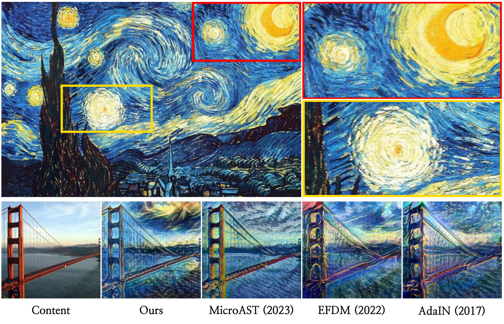
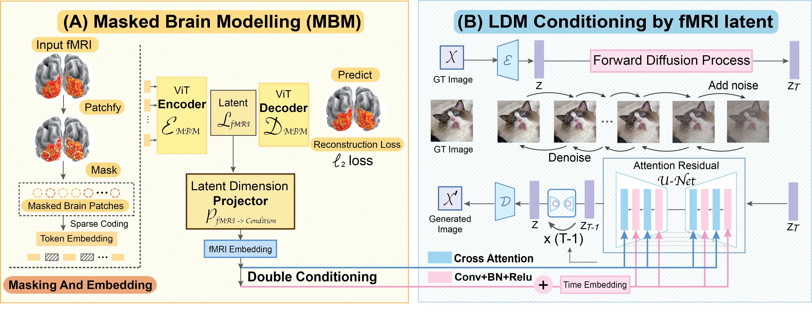

AesFA: An Aesthetic Feature-Aware Arbitrary Neural Style Transfer
AAAI2024
- Joonwoo Kwon 1*
- Sooyoung Kim 1*
- Yuewei Lin 2†
- Shinjae Yoo 2†
- Jiook Cha 1†
- 1Seoul National University
- 2Brookhaven National Laboratory
- *Equal contribution †Co-corresponding authors


Overview

- Style representations are highly correlated to spatial information.
- Existing methods heavily rely on pre-trained networks.
- We propose a lightweight yet effective model for aesthetic feature extraction and stylization.
- This framework introduces a new module for stylization and straightforward contrastive learning, while completely excluding pre-trained networks at inference.
- Our approach achieves SOTA results regardless of resolutions (256 to 4K) while achieving faster inference.
<Main Contributions>
Motivation
Decoding visual stimuli from brain recordings aims to deepen our understanding of the human visual system and build a solid foundation for bridging human vision and computer vision through the Brain-Computer Interface. However, due to the scarcity of data annotations and the complexity of underlying brain information, it is challenging to decode images with faithful details and meaningful semantics.
Methods
In this work,
Implementation Details
In this work,
Experimental Results
In this work,
Style Blending
In this work,
Video Style Transfer
In this work,
Limitations
In this work,
Highlights
- A human visual decoding system that only reply on limited annotations.
- State-of-the-art 100-way top-1 classification accuracy on GOD dataset: 23.9%, outperforming the previous best by 66%.
- State-of-the-art generation quality (FID) on GOD dataset: 1.67, outperforming the previous best by 41%.
- For the first time, we show that non-invasive brain recordings can be used to decode images with similar performance as invasive measures.
MinD-Vis
Stage A (left): Self-supervised pre-training on large-scale fMRI dataset using Sparse-Coding based Masked Brain Modeling (SC-MBM); Stage B (right): Double-Conditioned Latent Diffusion Model (DC-LDM) for image generation conditioned on brain recordings.
Results compared with benchmarks

Generation Consistency Replication Dataset

BibTeX
If you find our data or project useful in your research, please cite:
@article{kwon2023aesfa,
title={AesFA: An Aesthetic Feature-Aware Arbitrary Neural Style Transfer},
author={Kwon, Joonwoo and Kim, Sooyoung and Lin, Yuewei and Yoo, Shinjae and Cha, Jiook},
journal={arXiv preprint arXiv:2312.05928},
year={2023}
}